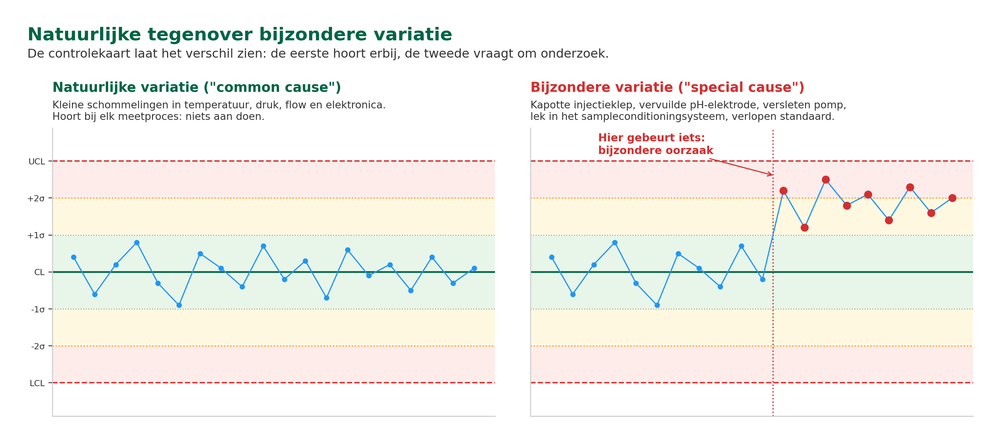
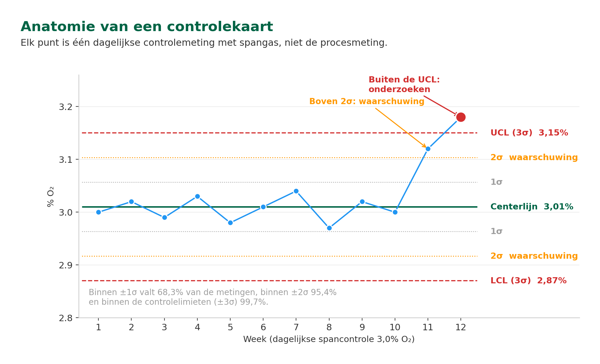
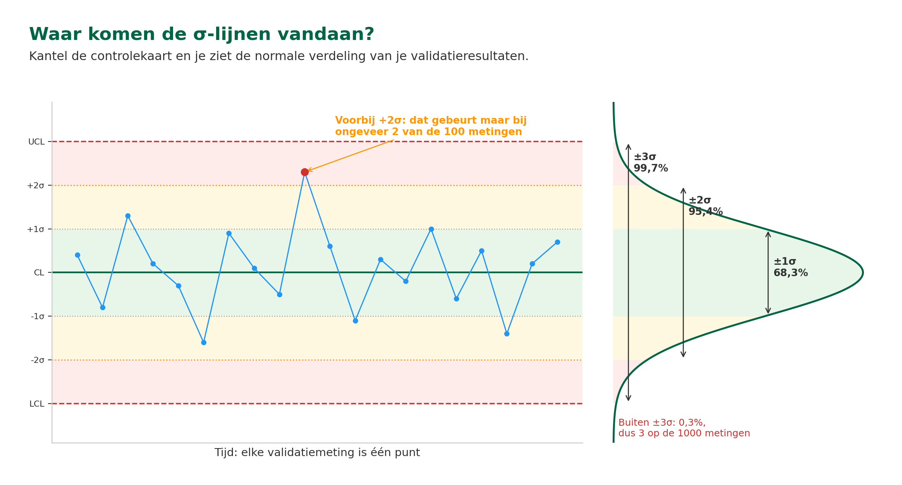
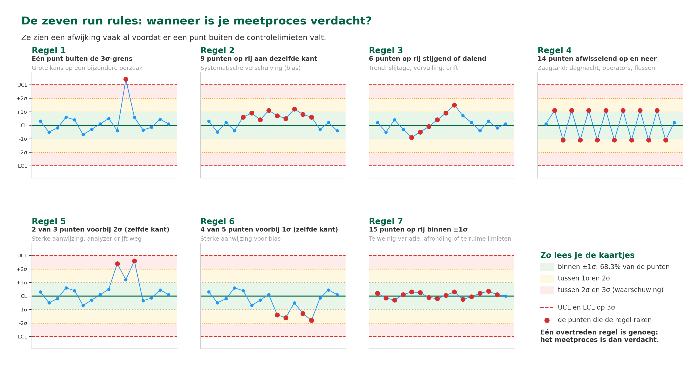
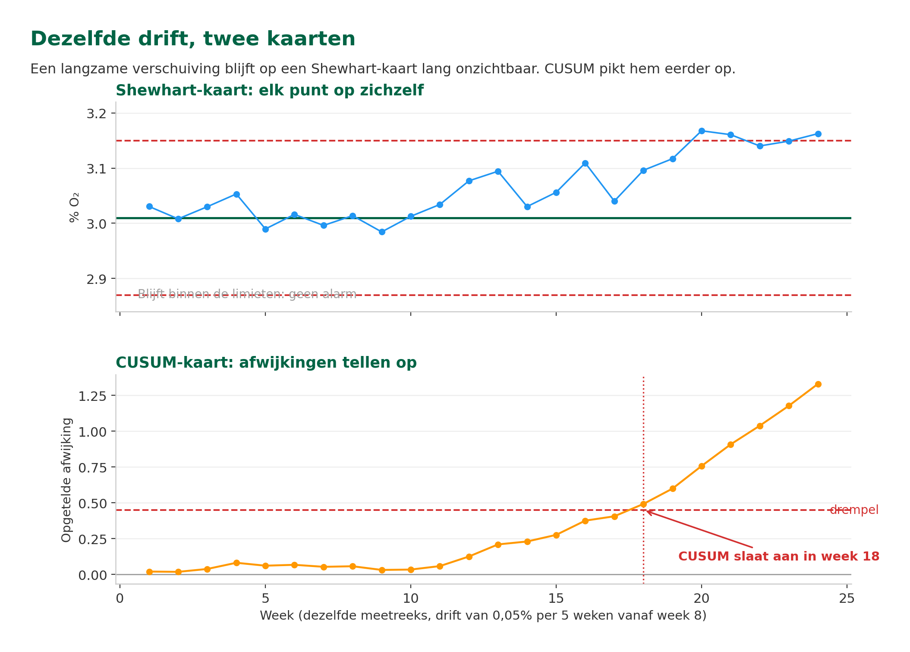
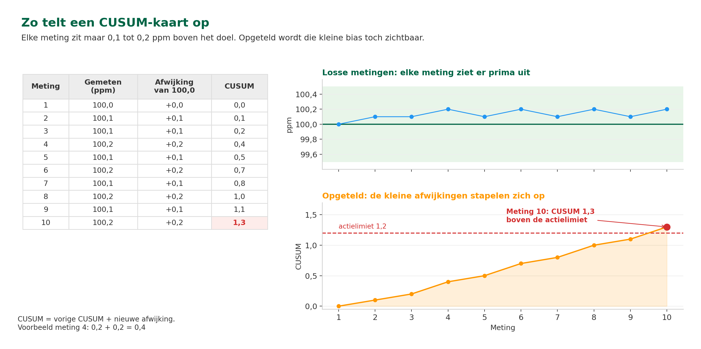
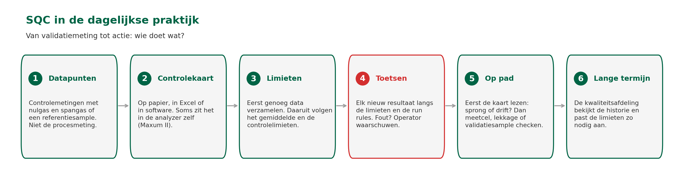
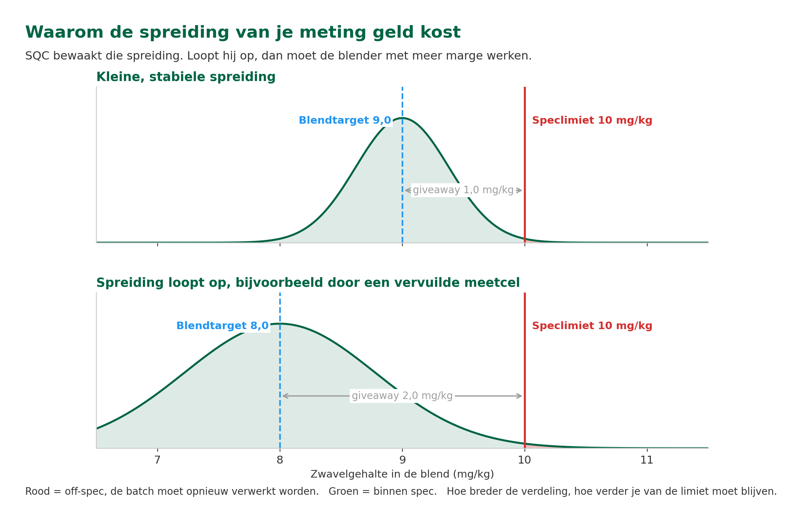

ANA – Module 4
2.1 Leerdoelen
Na het volgen van dit hoofdstuk kun je:
- Uitleggen waarom voor SQC meestal validatie- of referentiemetingen worden gebruikt in plaats van de procesmeting zelf, en welke beperkingen daarbij een rol spelen
- De basisprincipes van controlekaarten beschrijven
- Het verschil herkennen tussen een analyzer die 'in control' of 'out of control' is
- Verschillende soorten controlekaarten benoemen (Shewhart, CUSUM) en hun toepassing begrijpen
- Uitleggen hoe bias en drift zichtbaar worden in een controlekaart.
- Beschrijven wat je stap voor stap doet als er een SQC-alarm binnenkomt
2.2 Van schoolcijfers naar proceskwaliteit: Waarom SQC?
Je rapportcijfers als kwaliteitsbewaking
Stel je voor: je volgt een opleiding en houdt je cijfers bij. De eerste drie tentamens scoor je een 7,0, een 7,2 en een 6,8. Het schommelt iets, maar je gemiddelde blijft stabiel rond de 7. Geen reden tot zorg.
Maar dan haal je bij je vierde tentamen ineens een 4,5. Meteen gaan er alarmbellen af. Er is iets veranderd: misschien heb je te weinig gestudeerd, misschien was het tentamen anders dan verwacht. Hoe dan ook: die plotselinge afwijking is een signaal dat er iets aan de hand is.
Van momentopname naar patroon
In Module 4 Hoofdstuk 1 heb je geleerd hoe je een analyzer op een specifiek moment controleert met behulp van validatiemetingen van standaarden met een bekende concentratie. Maar wat gebeurt er op de langere termijn, als je meerdere validatieresultaten naast elkaar legt? Hoe merk je op tijd dat de meetkwaliteit langzaam verslechtert?
Precies dáár komt Statistical Quality Control (SQC) om de hoek kijken. Bij SQC houd je de resultaten van de controlesamples van je analyzer bij in een grafiek en let je op patronen. Kleine schommelingen zijn normaal: die horen bij elk meetproces. Maar als de waarden structureel beginnen af te wijken, is dat een teken dat er mogelijk iets mis is met je meetsysteem.
Van momentopname naar continu bewaken
SQC geeft je een statistische manier om de meetkwaliteit doorlopend in de gaten te houden. Het vervangt kalibratie niet, maar helpt bepalen wanneer onderhoud, onderzoek of herkalibratie nodig is.
Wat is het doel van Statistical Quality Control?
A) De meetkwaliteit over tijd bewaken en afwijkingen vroeg zien
B) De meetfout van een analyzer exact berekenen
C) De periodieke kalibratie vervangen door een statistische controle
D) Bepalen welke analyzer je het beste kunt aanschaffen
In Module 2 heb je geleerd over standaarden en referentiematerialen waarmee je analyzers kalibreert. Die standaarden spelen ook een rol bij SQC: je gebruikt controlemonsters, vergelijkbaar met je kalibratiestandaarden, om regelmatig te checken of je analyzer nog goed presteert. Het verschil is dat je bij kalibratie het instrument afstelt, en bij SQC alleen registreert en bewaakt.
2.3 Wat is SQC en hoe werkt het?
Natuurlijke variatie versus bijzondere variatie
Elke analyzer heeft van nature een zekere variatie in meetresultaten, die voortkomt uit de nauwkeurigheid van het instrument. Als je tien keer achter elkaar hetzelfde monster meet, krijg je niet tien keer exact dezelfde waarde. De ene keer meet je 50,1 ppm, de volgende keer 49,8 ppm, dan weer 50,3 ppm. Dat is normaal. Het wordt veroorzaakt door kleine schommelingen in bijvoorbeeld temperatuur, druk, flow, elektronica en andere factoren. Dit noemen we natuurlijke variatie, ook wel "common cause" variation.
Naast natuurlijke variatie kan er ook een afwijking ontstaan door een bijzondere oorzaak. Dit kan bijvoorbeeld komen door een defect aan de analyzer zelf, zoals een kapotte injectieklep of een defecte of vervuilde pH-elektrode. Ook een versleten pomp, een lekkage in het sampleconditioningsysteem of een verlopen kalibratiestandaard zijn mogelijke bijzondere oorzaken. Dit wordt ook wel "special cause" variation genoemd.

Dezelfde meting, twee situaties: links alleen natuurlijke variatie, rechts een bijzondere oorzaak.
Van nauwkeurigheid naar bewaking op lange termijn
In het vorige hoofdstuk hebben we nauwkeurigheid en precisie behandeld. Maar we willen ook weten of een analyzer op de langere termijn goed blijft meten: blijft hij even nauwkeurig en precies? Met controlekaarten kunnen we dit zichtbaar maken.
Voor sommige meetsystemen is SQC zelfs wettelijk verplicht. Bij analyzers die rookgasemissies bewaken, zoals een CEMS (Continuous Emissions Monitoring System), schrijft Europese regelgeving exact voor hoe en hoe vaak een kwaliteitscontrole op de data moet worden uitgevoerd.
FOTO NOG TE MAKEN — foto 5: Nulgas- en spangasflessen bij de analyzer. De flessenopstelling met het overnamestation, waaruit de analyzer zijn dagelijkse controlemetingen betrekt.
2.4 Controlekaarten: Je meetproces in beeld
Wat is een controlekaart?
Een controlekaart (control chart) is een grafiek die wordt gebruikt om te controleren of een proces stabiel en voorspelbaar verloopt. In deze grafiek worden de meetresultaten over een langere periode uitgezet, samen met een gemiddelde lijn en de bijbehorende limieten (control limits).
Zolang de meetpunten binnen de limieten vallen en er geen ongebruikelijke patronen zichtbaar zijn, wordt het proces als "in control" beschouwd. Punten die buiten de limieten vallen, of opvallende trends in de meetresultaten, kunnen wijzen op een bijzondere oorzaak van variatie, zoals een storing, een afwijkende werkwijze of een kwaliteitsprobleem.
Controlekaarten helpen onderhoudspersoneel om zo vroeg mogelijk afwijkingen te signaleren, de prestaties van de analyzer te bewaken en eventuele aanpassingen of verbeteringen objectief te beoordelen. Ze zijn daarmee een belangrijk hulpmiddel binnen Statistical Quality Control (SQC) en worden veel toegepast voor het opvolgen van procesanalyzers, maar bijvoorbeeld ook in laboratoria.
Wat betekent het als een meetpunt boven de UCL ligt?
A) Er speelt waarschijnlijk een bijzondere oorzaak mee
B) Dit is normaal, dat gebeurt bij een op de twee metingen
C) De meting is fout en moet uit de kaart verwijderd worden
D) De analyzer moet onmiddellijk vervangen worden
2.5 Soorten controlekaarten
Er zijn meerdere types controlekaarten. Hieronder bespreken we twee veelgebruikte types in detail en een aantal andere kort.
Shewhart-controlekaarten: Het werkpaard
De Shewhart-controlekaart is de meest gebruikte controlekaart en het type dat je als technicus het vaakst zult tegenkomen.
Een Shewhart-controlekaart is een grafiek waarin je de meetresultaten uitzet in de tijd. Het lijkt op een gewone grafiek, maar dan met een aantal extra horizontale lijnen:
- Centerlijn (CL): Het gemiddelde van je metingen. Dit is de waarde waaromheen je verwacht te schommelen als alles goed gaat.
- Bovenste controlelimiet (UCL, Upper Control Limit) en Onderste controlelimiet (LCL, Lower Control Limit): Dit zijn de boven- en ondergrens van de normale variatie op basis van historische meetgegevens. Deze lijnen worden ook wel de 3σ (sigma)-lijnen genoemd. Als meetresultaten buiten deze lijnen vallen, is meestal direct actie vereist.
- 1σ- en 2σ-lijnen: Tussen de UCL en de LCL bevinden zich ook de 1σ- en 2σ-lijnen. Dit zijn hulplijnen om snel en visueel trends en afwijkingen te kunnen detecteren. De 2σ-lijn wordt ook wel de "warning limit" genoemd.

De opbouw van een controlekaart, met de cijfers uit het O2-voorbeeld verderop in dit hoofdstuk.
De sigmawaarde zelf wordt berekend uit representatieve meetresultaten van uitgevoerde validaties. Afhankelijk van het proces kan deze berekening op meerdere manieren worden gedaan. Belangrijk om te onthouden is dat bij een normale verdeling van meetresultaten het volgende geldt voor deze verdeling van de meetresultaten binnen de (control) limieten:
| Bereik | Percentage |
|---|---|
| ±1σ | 68,3% |
| ±2σ | 95,4% |
| ±3σ | 99,7% |
Dat betekent dat maar ongeveer 0,3% van de meetresultaten (dus slechts 3 op de 1000 resultaten!) buiten de upper en lower control limits zullen vallen. Daarom wordt vaak niet alleen gekeken naar punten buiten de 3σ-limieten, maar ook naar patronen zoals trends of opeenvolgende punten aan dezelfde zijde van de centerlijn.

Kantel de controlekaart en je ziet de normale verdeling: daar komen de σ-lijnen vandaan.
Er zijn meerdere manieren waarop een Shewhart-controlekaart gebruikt kan worden. Zo kan bijvoorbeeld telkens één referentiesample met een bekende waarde worden gemeten op de analyzer, maar ook kan het analyzerresultaat worden vergeleken met het resultaat van een processample dat door het laboratorium is geanalyseerd. Als deze werkwijze wordt gevolgd moet je natuurlijk altijd beseffen dat de laboratoriumanalyzer zelf ook een eigen fout heeft en de totale fout dus iets groter zal zijn dan wanneer er wordt vergeleken met een gecertificeerde standaard die een vaste waarde heeft.
Soms worden controlekaarten ook in paren gebruikt: een kaart voor het niveau van de meting en een andere kaart voor de spreiding. Hierdoor wordt een nog betere opvolging mogelijk.
Herinner je het verschil tussen nauwkeurigheid en precisie uit Hoofdstuk 1 (§1.4)? De kaart voor het niveau bewaakt de nauwkeurigheid: verschuift het gemiddelde weg van de juiste waarde? De kaart voor de spreiding bewaakt de precisie: worden de metingen minder herhaalbaar? Twee problemen, twee kaarten.
Run Rules voor Shewhart controlekaart
Om trends of afwijkend gedrag makkelijk te herkennen, zijn er 'run rules' bedacht. Run rules helpen je om variatie te herkennen, zelfs als er geen punten buiten de control limits vallen.
Een proces is verdacht zodra één van deze regels wordt overtreden.
Regel 1: Eén punt buiten de 3σ-grens
Wat zie je?
- Een meetpunt ligt boven de UCL of onder de LCL.
Betekenis
- Grote kans op een afwijking door een speciale oorzaak.
- Controleer of de validatiemeting correct is uitgevoerd en voer indien nodig een herhalingsmeting uit. Voer indien nodig aansluitend onderzoek uit.
Regel 2: 9 punten achter elkaar aan dezelfde kant van het gemiddelde
Wat zie je?
- 9 opeenvolgende punten liggen allemaal boven of onder de centerlijn.
Betekenis
- Mogelijk is er sprake van een systematische verschuiving (bias) in het meetsysteem.
Regel 3: 6 punten achter elkaar stijgend of dalend
Wat zie je?
- Zes opeenvolgende meetpunten gaan steeds omhoog of steeds omlaag in de kaart.
Betekenis
- Er is een trend aanwezig.
- Mogelijk slijtage, toenemende vervuiling of verloop in gevoeligheid van een sensor.
Regel 4: 14 punten afwisselend omhoog en omlaag
Wat zie je?
- Een zaagtandpatroon op de meetresultaten in de grafiek.
Betekenis
Dit hangt af van hoe het validatieproces is ingericht:
- Kan worden veroorzaakt door bijvoorbeeld een dag-nachtvariatie.
- Afwijkende werkwijze van verschillende operators
- Mogelijk gebruik van verschillende validatieflessen?
Regel 5: 2 van 3 opeenvolgende punten buiten 2σ limiet
Wat zie je?
- Twee van drie punten liggen tussen 2σ en 3σ aan dezelfde zijde van het gemiddelde.
Betekenis
- Sterke aanwijzing dat de analyzer aan het wegdriften is.
Regel 6: 4 van 5 opeenvolgende punten buiten 1σ
Wat zie je?
- Vier van vijf punten liggen verder dan 1σ van het gemiddelde aan dezelfde zijde.
Betekenis
- Sterke aanwijzing voor een bias in het meetsysteem. Nader onderzoek is vereist.
Regel 7: 15 punten achter elkaar binnen ±1σ
Wat zie je?
- Alle punten zitten erg dicht rond het gemiddelde.
Betekenis
- Te weinig variatie in de meetresultaten.
- Mogelijk meetprobleem door te grove afronding van data.
- De controlelimieten zijn mogelijk te ruim vastgesteld (de sigma is te groot).
Al deze regels zullen dus resulteren in een actie om een afwijking te detecteren en daarmee de kwaliteit van de meetresultaten te verbeteren.

De zeven run rules op een rij. Eén overtreden regel is genoeg om het meetproces verdacht te maken.
Bij de dagelijkse spancontrole liggen negen metingen op rij net boven de centerlijn, allemaal ruim binnen de UCL. Wat doe je?
A) Niets: zolang alle punten binnen de limieten vallen, is er niets aan de hand
B) Onderzoeken: negen punten aan één kant wijst op een verschuiving
C) De controlelimieten meteen ruimer zetten, dan verdwijnt het signaal
D) Alleen het laatste punt opnieuw meten
CUSUM-kaarten: De trendspotter
Een CUSUM (Cumulative Sum) controlekaart is een controlekaart die kleine en geleidelijke veranderingen in meetresultaten sneller kan detecteren dan een simpele traditionele controlekaart. In plaats van alleen individuele meetwaarden te bekijken, telt CUSUM de opeenvolgende afwijkingen ten opzichte van een referentiewaarde of gemiddelde bij elkaar op.
Voor elke meting wordt bepaald hoeveel deze afwijkt van de referentiewaarde. Deze afwijkingen worden vervolgens bij elkaar opgeteld. Ligt een meting boven de referentiewaarde, dan stijgt de CUSUM-lijn; ligt deze eronder, dan daalt de lijn. Zolang het proces stabiel is, schommelt de CUSUM rond nul of een vaste referentielijn.
Wanneer het meetresultaat structureel verschuift, bijvoorbeeld door slijtage van apparatuur of een gewijzigde instelling, bouwt de som van de afwijkingen zich op. De CUSUM-lijn vertoont dan een duidelijke stijgende of dalende trend. Zodra een vooraf ingestelde beslissingsgrens wordt overschreden in de chart dient er een onderzoek te worden gestart om de oorzaak van het wegdriften van de analyzer te achterhalen.

Dezelfde langzame drift op twee kaarten. De Shewhart blijft binnen de limieten, de CUSUM loopt weg.
Hieronder zie je een overzicht van resultaten van een bepaalde meting. De actielimiet voor deze CUSUM-kaart staat op 1,2.

Elke meting zit net boven het doel. Opgeteld komt de CUSUM bij meting 10 boven de actielimiet.
In deze grafiek is te zien dat hoewel de individuele resultaten er eigenlijk goed uitzien wordt toch een kleine bias gedetecteerd die bijgesteld zou moeten worden.
Wat is het verschil tussen een Shewhart-kaart en een CUSUM-kaart?
A) Shewhart ziet kleine drift, CUSUM ziet grote sprongen
B) Shewhart is voor gassen, CUSUM is voor vloeistoffen
C) Shewhart ziet grote sprongen, CUSUM ziet kleine drift
D) Twee namen voor dezelfde kaart, ze rekenen hetzelfde
2.6 SQC in de dagelijkse praktijk
Waar gebeurt SQC in de praktijk?
Goed, dit is de theorie, maar wie maakt die grafieken, en waar kun je ze zien? Kort gezegd: de analyzer levert datapunten, een systeem maakt er controlekaarten van, en mensen houden ze in de gaten. Hoe dat praktisch werkt, zie je hieronder.
- De analyzer levert de datapunten. Bij een continue analyzer (een O₂-rookgasanalyzer, een pH-meter of een CO-meter) is de procesmeting juist niet het datapunt: die varieert immers gewoon mee met het proces. Wat wél geschikt is, zijn de controlemetingen. Met een vast interval meet de analyzer een nulgas en een spangas, en die resultaten gaan op de controlekaart.
- Je hebt een controlekaart nodig. Dat kan eenvoudig op papier of bijvoorbeeld in Excel zijn, maar er zijn ook uitgebreide softwarepakketten die dit voor je doen; bij sommige gaschromatografen (zoals bij een Valmet Maxum II) zit de SQC-module zelfs in de software van de analyzer zelf.
- Voor het starten van een nieuwe controlekaart dient eerst een hoeveelheid data te worden verzameld waaruit een gemiddelde waarde en de control limits kunnen worden berekend. Zodra deze zijn vastgesteld kun je starten met het opvolgen van de analyzer.
- Het uitvoeren van validaties kan handmatig of volledig geautomatiseerd plaatsvinden. Welk systeem er wordt gebruikt, maakt niet veel uit: het nieuwe resultaat moet worden getoetst aan de limieten en de run rules van de controlekaart. Valt een resultaat buiten de limieten of wordt er een run rule overtreden dan dient actie te worden genomen. Veelal wordt direct de operator in de controlekamer op de hoogte gebracht van het feit dat de data niet betrouwbaar is en wordt de analyzer uit dienst genomen.
- Jij gaat op pad. Voordat je vertrekt kijk je eerst naar de kaart: gaat het om een plotselinge sprong of om een langzame drift? Dat scheelt zoeken. Ter plekke denk je aan vervuiling van de meetcel, een lekkage in het sampleconditioningsysteem. Of misschien is een validatiesample verkeerd aangeboden of misschien zelfs niet meer goed?
- De kwaliteitsafdeling kijkt meestal over een langere termijn naar de resultaten en zal als dat nodig is op basis van resultaten uit het verleden de actuele control limits bepalen en aanpassen indien nodig.

Van validatiemeting tot actie: de zes stappen van SQC in de praktijk.
Praktijkvoorbeeld: Shewhart-kaart bij een O₂-rookgasanalyzer
Bij een verbrandingsinstallatie hangt een O₂-analyzer in het rookgaskanaal. Denk aan een stookfornuis in een raffinaderij of een stoomketel van een chemiefabriek: beide hebben rookgasemissies die bewaakt moeten worden. De analyzer is onderdeel van een CEMS, het meetsysteem waarmee het bedrijf zijn uitstoot rapporteert (zie §2.3). Voor dit soort emissiemetingen is dagelijkse kwaliteitscontrole op de meetdata wettelijk verplicht, en dat gebeurt via SQC.
De analyzer doet elke nacht automatisch twee controlemetingen met gecertificeerde testgassen: eerst een nulgas (0% O₂), daarna een spangas van 3,0% O₂. Die twee controlemetingen zijn de datapunten voor de Shewhart-kaart, niet de procesmetingen overdag.
Na drie maanden data verzamelen op de span-controle (3,0% O₂) blijkt:
- Gemiddelde (CL): 3,01% O₂
- UCL: 3,15% O₂
- LCL: 2,87% O₂
📖 Week 1 t/m 10: alle dagelijkse controlemetingen schommelen rond 3,01%. Alles normaal.
Week 11: de controlemeting springt naar 3,12%. Nog binnen de limieten, maar opvallend hoog.
Week 12: de controlemeting stijgt naar 3,18%. Boven de UCL.
Actie: de technicus gaat naar het analyzerhuis en onderzoekt de oorzaak. Het blijkt dat de meetcel vervuild is geraakt door deeltjes uit de rookgassen. Na reiniging van de meetcel en herkalibratie keert de controlemeting terug naar 3,02%. Wat er is gebeurd, wat de oorzaak was en hoe het is opgelost, wordt vastgelegd in het kwaliteitslogboek. De kwaliteitsafdeling gebruikt dat logboek bij de rapportage aan de overheid.
📖 Praktijkvoorbeeld: CUSUM bij online analyzer versus laboratoriumreferentie
Bij een raffinaderij meet een online analyzer continu het zwavelgehalte in een dieselstroom. De analyzer staat in een analyzerhuis vlak naast het proces. Hij neemt zelf automatisch een sample uit de leiding, meet het zwavelgehalte, en stuurt de meetwaarde continu door naar de controlekamer.
Elke dag neemt de operator daarnaast handmatig een grab-sample uit dezelfde leiding. Dat sample gaat naar het laboratorium en wordt daar gemeten op een gecertificeerd labinstrument. De uitkomst van het lab is de referentiewaarde.
De online meting en de labmeting zouden binnen enkele ppm aan elkaar gelijk moeten zijn. In de eerste weken is dat ook zo.
Na ongeveer zes weken pikt de CUSUM-kaart iets op wat op een Shewhart-kaart nog ongemerkt blijft: het verschil (online minus lab) begint langzaam weg te zakken. Per afzonderlijke meting is het verschil te klein om alarm te slaan, maar bij elkaar opgeteld (cumulatief) wordt duidelijk dat er een drift in zit.
De technicus onderzoekt dit en ontdekt dat de signaalopbrengst op de detector van de analyzer aan het zakken is. Dat is een normaal verouderingsverschijnsel, maar zonder CUSUM was het pas opgemerkt als de online meting buiten specificatie zou raken. Nu wordt de lichtbron in de analyzer tijdig preventief vervangen waardoor de lichtopbrengst op de detector weer goed is.
Hetzelfde type toepassing kom je ook tegen in de chemie. Denk aan een pH-meting in een neutralisatiesectie van een afvalwaterbehandeling, of een continue concentratiemeting op een monomeer-grondstof voor een polymerisatiereactor, telkens vergeleken met labreferentie. En buiten de analyzerwereld werkt dezelfde CUSUM-logica op twee redundante drukmetingen van dezelfde leiding (trip-transmitter versus regeltransmitter): je ziet dan al heel vroeg of de twee onderling gaan afdrijven.
Veelvoorkomende oorzaken waardoor procesanalyzers out of control raken
- Vervuiling. De meetcel of optische componenten zijn vervuild of deels verstopt. Denk bijvoorbeeld aan roetdeeltjes in rookgassen van een verbrandingsinstallatie, katalysatorstof of polymeerdeeltjes in een chemische processtroom, of afzettingen op een pH-elektrode in een waterig procesmedium.
- Problemen met de sample conditioning (Module 3). Oorzaken kunnen zijn: een verstopt filter, een lekkage in de sampleleiding, een storing in de drukregeling of condensaat dat de leiding gedeeltelijk of volledig blokkeert.
- Degradatie van de sensor. Slijtage of veroudering van de meetcomponenten kan leiden tot afwijkende meetresultaten. Voorbeelden zijn een verouderde glaselektrode van een pH-meter, een lamp van een spectrofotometer of een afnemende scheidingscapaciteit van een GC-kolom.
- Veranderingen in de samplematrix (Module 2). Wanneer de samenstelling van het proces verandert, kan de analyzer anders reageren. Dit komt bijvoorbeeld voor bij batchprocessen in de chemische industrie, waarbij een andere grondstof of receptuur wordt gebruikt, of wanneer een raffinaderij overschakelt op een andere soort ruwe olie.
- Elektronische storingen. Defecte componenten, losse verbindingen of corrosie op connectoren in het analyzerhuis kunnen de meetresultaten beïnvloeden.
- Verlopen of onjuist testgas. Het gebruikte testgas kan zelf niet goed zijn, bijvoorbeeld doordat de cilinder over de houdbaarheidsdatum is, waardoor de samenstelling niet meer gegarandeerd kan worden, of doordat per ongeluk een cilinder met de verkeerde concentratie is aangesloten.
In Module 3 (Hoofdstuk 2) heb je geleerd wat het verschil is tussen laboratoriummonsters en continue metingen. SQC kan voor beide situaties worden toegepast, maar levert bij continue procesanalyzers doorgaans de grootste voordelen op. Deze analyzers genereren immers dag en nacht meetgegevens, waardoor afwijkingen sneller worden herkend en gecorrigeerd.
Wanneer herbereken je de limieten op een controlekaart?
De centerlijn en de controlelimieten van een controlekaart worden berekend op basis van een periode waarin het meetproces stabiel was. Wanneer er iets verandert aan dat proces, kan het nodig zijn om deze limieten opnieuw te berekenen. Denk bijvoorbeeld aan de vervanging van een meetcel, een wijziging van het meetbereik of de ingebruikname van een nieuwe testgascilinder met een iets andere gecertificeerde waarde.
Als je de limieten niet aanpast, wordt de nieuwe situatie beoordeeld aan de hand van de oude referentie. Dat kan twee ongewenste gevolgen hebben. Enerzijds kan de controlekaart voortdurend alarmen genereren terwijl er in werkelijkheid niets aan de hand is. Anderzijds kan de kaart geen alarm geven terwijl de procesvariatie inmiddels is toegenomen. In beide gevallen neemt het vertrouwen in de controlekaart af en bestaat het risico dat gebruikers de signalen gaan negeren.
De regel is eenvoudig: herbereken de controlelimieten pas nadat je opnieuw voldoende meetgegevens hebt verzameld tijdens een stabiele periode. Leg daarnaast altijd vast waarom de limieten zijn aangepast en wanneer dit is gebeurd. Dit is niet alleen goed beheer van het meetsysteem, maar ook belangrijk voor audits. Bij een CEMS-installatie behoort deze documentatie tot de informatie die een auditor zal willen beoordelen.
📖 Praktijkvoorbeeld: SQC maakt marge-optimalisatie mogelijk bij het blenden van diesel
Bij het blenden van diesel combineert een raffinaderij verschillende componenten tot een eindproduct dat exact aan de productspecificaties moet voldoen. Neem bijvoorbeeld het zwavelgehalte: de wettelijke specificatie bedraagt maximaal 10 mg/kg. Een online analyzer bewaakt het zwavelgehalte van de blend continu.
Wanneer het zwavelgehalte te hoog uitvalt, voldoet het product niet meer aan de specificatie en is de batch off-spec. Zo'n batch mag niet worden uitgeleverd en moet opnieuw worden verwerkt of worden gecorrigeerd. Blijf je daarentegen uit voorzorg ruim onder de limiet, dan gebruik je meer van de dure, diep ontzwavelde componenten dan noodzakelijk. Dit wordt giveaway genoemd: je levert meer kwaliteit dan de klant vraagt, zonder dat daar een hogere verkoopprijs tegenover staat.
Hoe dicht je tegen de specificatielimiet kunt blenden, wordt in belangrijke mate bepaald door de spreiding van de meting, uitgedrukt als sigma (σ). Wanneer de analyzer een kleine en stabiele sigma heeft, kan de blendtarget dicht onder de limiet worden ingesteld, bijvoorbeeld op 9 mg/kg. Neemt de spreiding toe, dan moet een grotere veiligheidsmarge worden aangehouden. De blendtarget komt daardoor lager te liggen, wat leidt tot meer giveaway. Hoe kleiner en stabieler de sigma, hoe groter de economische optimalisatie die mogelijk is.
Hier speelt Statistical Quality Control (SQC) een belangrijke rol. Met behulp van controlekaarten wordt continu bewaakt of de spreiding van de analyzer klein en stabiel blijft. Ziet de technicus dat de spreiding toeneemt, bijvoorbeeld door een vervuilde meetcel of een verouderde detector, dan is dat een signaal om de analyzer te inspecteren en zo nodig onderhoud uit te voeren. Hierdoor kan worden voorkomen dat de blender extra veiligheidsmarge moet aanhouden. Bij blends van duizenden tonnen kunnen zelfs kleine extra marges in het ppm-bereik namelijk een aanzienlijke impact hebben op de productiekosten.

De spreiding van je meting bepaalt hoe dicht je tegen de specificatie durft te blenden.
In Module 1 (Hoofdstuk 2) heb je geleerd over gasdetectiesystemen die continu de veiligheid bewaken in analyserhuizen. Voor dit soort veiligheidskritische metingen is SQC extra belangrijk: een gasdetector die langzaam drijft zonder dat iemand het merkt, kan het verschil maken tussen tijdig alarm en een ongeluk.
Heb je feedback op deze pagina? Laat het weten via GitHub.